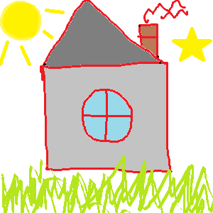
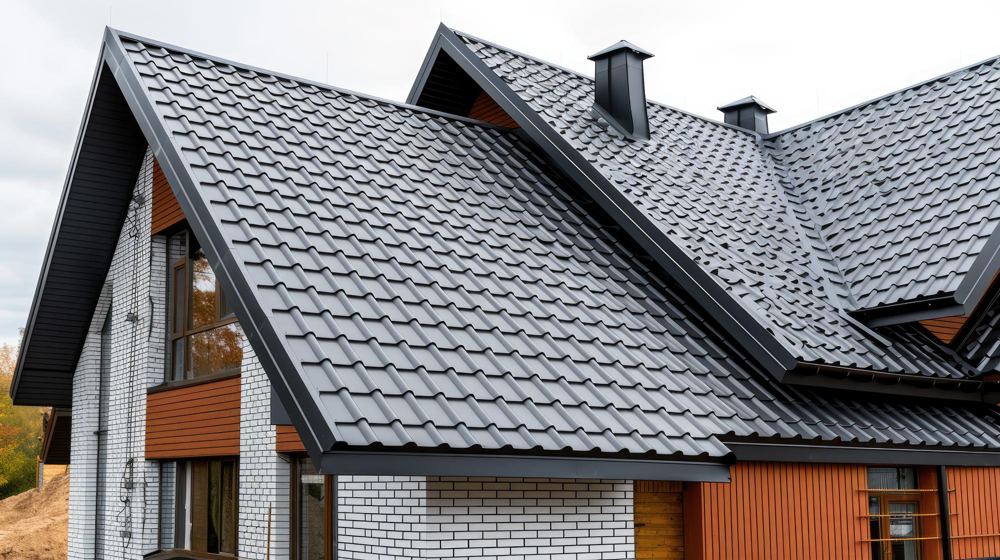

Katus on ehitise ülemine osa, mis koosneb eri materjalidest ja konstruktsioonilistest elementidest ning toetub ehitise seintele ja tugedele. Katuse peamine ülesanne on kaitsta ehitist vihma, lume, päikse, temperatuuri ja tuule eest
